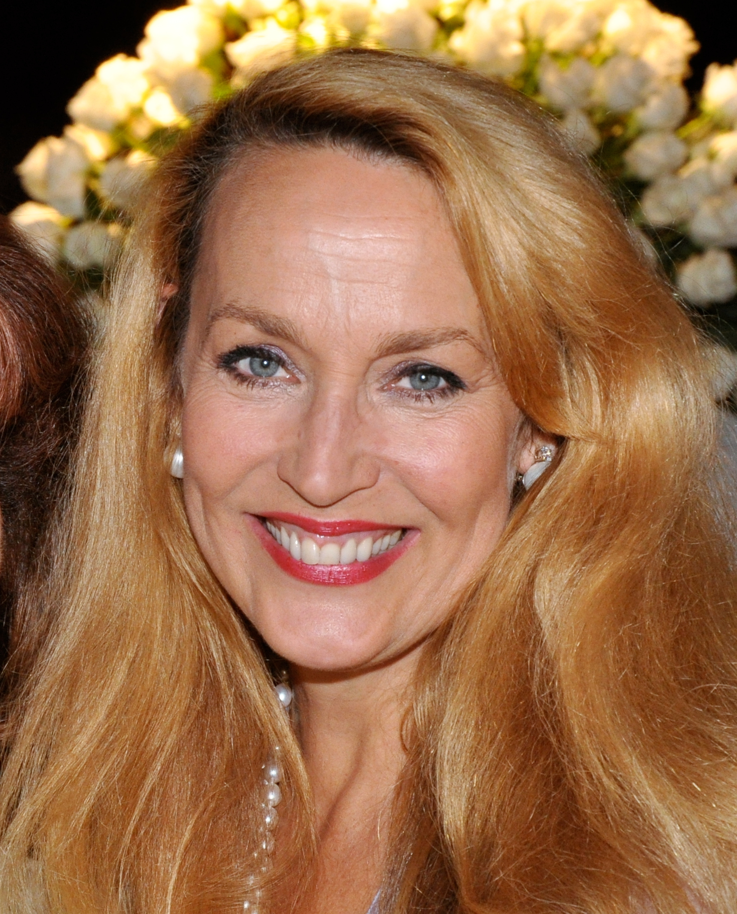

Кім Бейсінгер - репортер Вікі Вейл
Кім Бейсінгер - репортер Вікі Вейл
Майкл Кітон - Брюс Уейн / Бетмен
Джек Ніколсон - Джек Нап'є / Джокер
Кім Бейсінгер - репортер Вікі Вейл
Роберт Вул - репортер Олександр Нокс
Пет Хінгл - комісар Джеймс Гордон
Біллі Ді Вільямс - Харві Дент
 Майкл Гоф - дворецький Альфред Пенніуорт
Майкл Гоф - дворецький Альфред Пенніуорт
Джек Пеланс - Карл Гріссом
 Джері Холл - Алісія
Трейсі Волтер - злочинець Боб